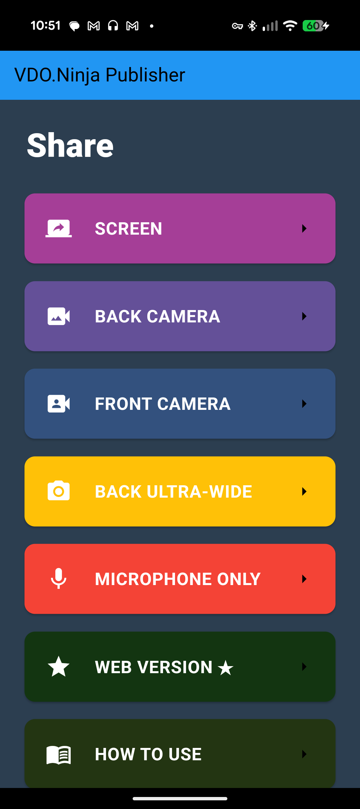
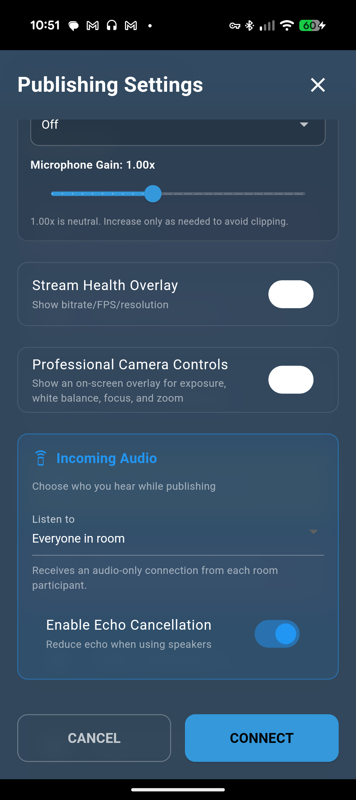

Go live in four steps
A viewer only needs a modern browser. They do not need to install the app.
- Choose what to share.Tap a camera, SCREEN, or MICROPHONE ONLY.
- Check Publishing Settings.Leave Stream ID empty for a random ID, or enter a memorable one. Select your microphone if needed.
- Tap CONNECT.Allow camera, microphone, screen-capture, or USB permissions when asked.
- Share the Viewer Link.Use the share button. Keep the app running while you publish.


Camera and microphone basics
Use Back Camera for filming away from you, Front Camera for self-view, or Ultra-Wide when available.
In Publishing Settings, select the phone mic, headset, or connected USB audio input you want to send.
Viewer links and Stream IDs are case-sensitive. Use the share button to avoid typing mistakes.
While live, use the microphone and camera buttons to mute tracks, the link button to reopen the Viewer Link, and the red phone button to end the stream. The More menu contains supported options such as camera controls, audio settings, Picture in Picture, torch, and local recording.
Share your screen
Tap SCREEN, review Publishing Settings, then tap CONNECT.
iPhone or iPad steps
- In the iOS broadcast picker, select the VDO.Ninja Broadcast service.
- Start the broadcast and return to the content you want to share.
- Use iOS 16 or newer. Keep Low Power Mode off if broadcasting stops unexpectedly.
Android steps
Approve Android's screen-capture confirmation. If system audio or microphone narration is enabled in Publishing Settings, also grant the requested audio permissions.
Android USB camera and audio
The Android app supports many USB-C UVC cameras and compatible USB audio devices. USB camera capture is not available in the iOS app.
- Connect the UVC camera to the Android phone, using a powered hub if the camera needs more power.
- Accept the Android USB permission prompt. A USB CAMERA option should appear automatically on the app home screen.
- Tap USB CAMERA. In Publishing Settings, choose the USB microphone if it appears and you want to use it.
- Tap CONNECT and share the Viewer Link.
Quick fixes
The stream stops or will not start
- Grant every requested camera, microphone, screen, or USB permission.
- Turn off Low Power Mode or battery optimization for the app.
- Try a lower video-quality setting and a stable Wi-Fi or wired connection.
- On iOS, use Picture in Picture when switching to another app.
The viewer cannot see or hear the stream
- Send the Viewer Link with the share button; IDs and room names are case-sensitive.
- Confirm your live microphone or camera button is not muted.
- Ask the viewer to allow playback and check their device volume.
- Try a different network if a firewall or restrictive Wi-Fi blocks WebRTC.
Optional features
Open these only when you need more than a basic one-way stream.
Talk with guests using Room Audio
Room Audio controls whose audio the app plays back to you while your outgoing camera or microphone continues normally.
For a group conversation
- Enter the same Room name the other participants will use.
- Turn on Advanced Settings. Under Incoming Audio, choose Everyone in room.
- Leave Enable Echo Cancellation on, especially when using the phone speaker.
- Tap CONNECT. Guests can open
https://vdo.ninja/?room=YOUR_ROOM_NAME, join the room, and allow their microphone.
Publish only. You will not hear remote audio.
Hear one publisher by entering their Remote Stream ID.
Hear all active publishers in your room.


Use the stream in OBS
- Add the Viewer Link as an OBS Browser Source.
- Enable Control audio via OBS in the Browser Source properties.
- Set the source size to match your production, commonly 1920×1080.
Viewer-link options
Add URL parameters with &. For example, &bitrate=500 requests a 500-kbps video bitrate and &audiobitrate=65 requests higher-quality audio.
Stream IDs and room names are case-sensitive. Use long, hard-to-guess names for private sessions.
See the complete VDO.Ninja documentation for more parameters.